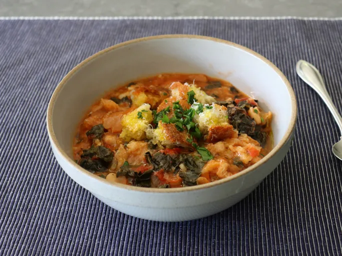

Ribollita

Description
This very thick, hearty ribollita, or Tuscan bread soup, might be so thick it's hardly a soup anymore. With toasted Italian bread simmered in a tomato and cannellini bean base, this is the epitome of rustic Italian comfort food.
Ingredients
- Sliced clove garlic
- salt
- olive oil
- Italian bread
- white cannellini beans
- Tomatoes
Steps
- Preheat the oven to 150°C.
- Crush garlic and salt together in a mortar
- Tear Bread, and bake
- Add other ingredients